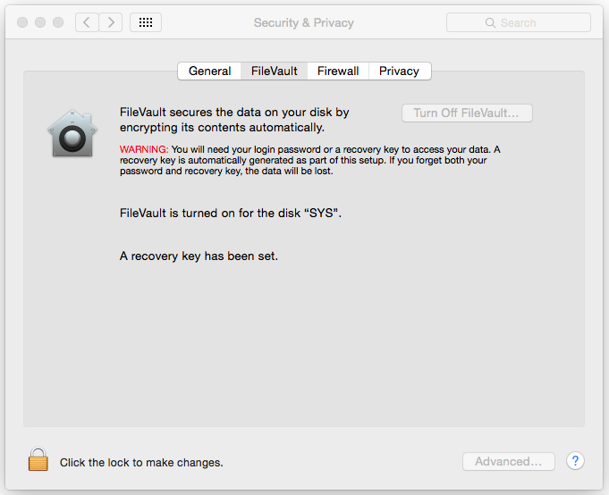
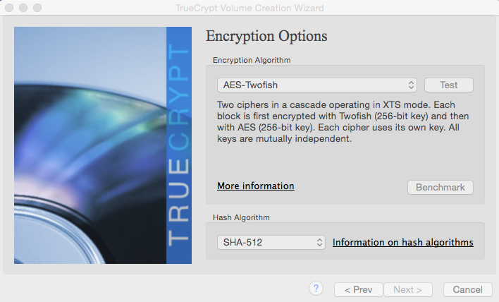

Disk Encryption
Please be advised (because there is often some confusion with disk encryption): Full disk encryption does protect you data, when the system is turned off - it does not protect your data while it is up and running or in standby mode.
FileVault (Mac OS X)
An easy way for Mac OS X users to encrypt the content of their disks is to enable the integrated "FileVault" function.
With FileVault 2 you can encrypt the contents of your entire drive to help keep your data secure. FileVault 2 uses full disk, XTS-AES 128 encryption to help keep your data secure. Using FileVault 2, you can encrypt the contents of your entire drive.
Screenshots

Above: Configuring FileVault
Tutorial
Find a tutorial on how to enable FileVault on your Mac here.
Symantec Endpoint Encryption
Symantec offers a full disk encryption called "Endpoint Encryption" which uses strong PGP technology.
- Full disk and removable media encryption with management
- Solid protection works with Symantec Data Loss Prevention for even stronger security
- Easy but robust management enables enterprise-scale deployments
- Multiple recovery options always provide the right solutions
Download
Price: 85 USD (1 year support)
Visit the web page for more details.
Linux Root Partition Encryption
This is for professional users only.
Screenshot
Above: Example Configuration - Encrypted Root FS
Tutorial
The best tutorial on how to install a Linux system on an encrypted root file system can be found here. See Step 2 for details.
We have also found a script that should complete the manual task, but haven't tested it yet.
TrueCrypt
TreuCrypt offers full disk encryption for Windows and encrypted containers also for Mac OS X and Linux.
TrueCrypt is a software system for establishing and maintaining an on-the-fly-encrypted volume (data storage device). On-the-fly encryption means that data is automatically encrypted right before it is saved and decrypted right after it is loaded, without any user intervention. No data stored on an encrypted volume can be read (decrypted) without using the correct password/keyfile(s) or correct encryption keys. Entire file systems can be encrypted (e.g., file names, folder names, contents of every file, free space, meta data, etc).
Main features:
- Creates a virtual encrypted disk within a file and mounts it as a real disk.
- Encrypts an entire partition or storage device such as USB flash drive or hard drive.
- Encrypts a partition or drive where Windows is installed (pre-boot authentication).
- Encryption is automatic, real-time (on-the-fly) and transparent.
- Parallelization and pipelining allow data to be read and written as fast as if the drive was not encrypted.
- Encryption can be hardware-accelerated on modern processors.
- Provides plausible deniability, in case an adversary forces you to reveal the password: Hidden volume (steganography) and hidden operating system.
Recommended Options for New Volumes
AES is still considered as unbroken (Dec 2014) but certain government programs have been identified that are aimed at breaking that widely used encryption algorithm. You should use Twofish in combination with AES to be on the safe side. Don't use Serpent as it has been developed to be used in hardware and the software based encryption/decryption is rather slow.
Also change RIPEMD-160 to SHA-256. Read this discussion here if you want to know why.

Above: Recommended encryption options for New TrueCrypt Volumes
No Official Development
In May 2014 the developers of TrueCrypt suddenly closed the website and development putting forward some obscure reasons.
We still recommend using it as it is still considered unbroken and safe. Criminals including the NSA still cannot decrypt TrueCrypt volumes based on two different encryption algorithms and strongs passphrases.
"For reasons that remain a titillating source of hypothesis, intrigue and paranoia, TrueCrypt's developers chose not to graciously turn their beloved creation over to a wider Internet development community, but rather, as has always been their right granted by TrueCrypt's longstanding license, to attempt to kill it off by creating a dramatically neutered 7.2 version that can only be used to view, but no longer to create new, TrueCrypt volumes.""
Read the full story here.
Screenshots
Above: Main window (source: heise.de)
Download
Still available on an alternative site
Price: Free
More Information
For more information visit grc.com